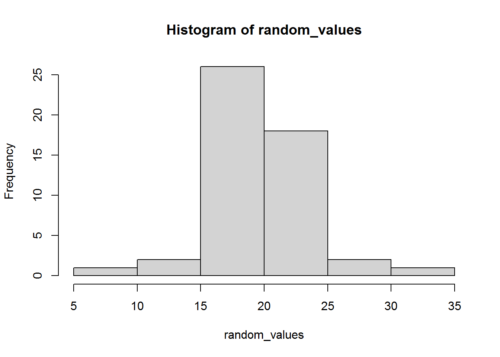
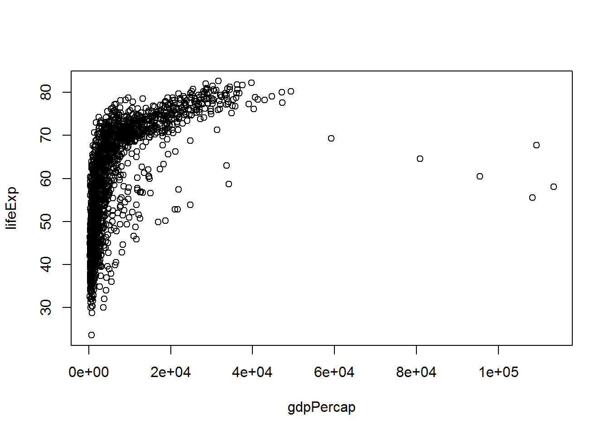

Chapter 1 Starting R
This chapter is a tour of some of the basics of the R language. Please follow along in RStudio as you read and try not to peek at the answers until you have given the activities a good go!
By the end of this tutorial you will know how to:
- Do basic stuff in R like arithmetic.
- Assign results of calculations to variables and refer to these.
- Calculate descriptive statistics like mean and standard deviation (SD).
- Install add-on packages from the internet and include them.
- Open a dataset in R.
This will prepare you for your first analysis of data.
1.1 Arithmetic
You can use R as a calculator:
+ is addition
- is subtraction
* is multiplication
/ is division
^ is exponentiation
So, for instance to calculate \(\frac{1}{2}\) you do
1/2To work out \(2^3\) do:
2^3The usual mathematical order of precedence rules apply, so
1 + 2 * 3gives different result to
(1 + 2) * 3(Try it!)
1.1.1 Activities
Easing in tremendously gently…
What is the R code to calculate 2 + 2
How do you multiply 6 and 7?
1.1.2 Answers
a. What is the R code to calculate 2 + 2
2 + 2## [1] 4b. How do you multiply 6 and 7?
6 * 7## [1] 421.2 Variables
R has a flexible way of creating and naming “objects” of various kinds, so that you can refer to them later. These objects may be things like the answer to a sum, a whole dataset, or the result of a regression analysis.
Let’s start with a sum – we will get to the more complex examples soon!
Look at this R code:
first_bit <- 2 + 2
second_bit <- first_bit / 8Read as
- “set
first_bitto 2 plus 2” - “set
second_bittofirst_bitdivided by 8”
The <- symbol is called an “assignment statement” and first_bit and second_bit are variable names.
1.2.1 Activity
When you run the code above, you will see that nothing actually seems to happen. Can you guess what you need to do to get the answer to the second_bit sum?
1.2.2 Answer
You just have to type and run the name of the variable.
second_bit## [1] 0.51.3 A note on variable names
There are limitations to the names you can use for variables (but ways to get around those – for another time). To keep life simple:
- make sure variable names always start with a character, “a” to “z.”
- they can have a number after the first character
- you can use an underscore, "_", as a sort of space
- remember that variables are cAsE sEnSiTiVe and consider always using lower case
- try to make variable names meaningful
1.4 Vectors
Vectors are a list of values of the same type of information. They usually come from a dataset, but you can also build them directly in R.
Vectors can be of whole numbers…
c(3,1,4,1,3,1,1,3,2,1)… or (approximations of) real numbers…
c(1.2, 2.4, -2.3)… or character strings, which are often used to represent categorical information:
gender <- c("woman", "woman", "man", "woman",
"genderqueer", "genderqueer", "gender fluid")In this last example, I have saved the vector in a variable called gender.
1.4.1 Activity
Try making a vector of the members of your favourite band (or other grouping of people that makes sense to you) and save the result in a variable with a meaningful name.
1.4.2 Answer
stereo_total <- c("Françoise Cactus", "Brezel Göring")1.5 Functions
A function in R is a magical computational machine which takes an input and transforms it in some way, giving an output. (This is not a formal definition.)
Here’s a vector:
c(2,4,12)One of R’s functions calculates the mean of a vector of numbers:
mean(c(2,4,12))## [1] 6There is another for the median:
median(c(2,4,12))## [1] 4Since these are built into R, there is also help. Try typing:
?meanWe can also apply functions to variables. Another useful function is table which creates a table of counts.
So, in summary, to use a function you use its name and then tell it the inputs in parentheses.
1.5.1 Activity
Make a table of the gender variable we created earlier.
1.5.2 Answer
table(gender)## gender
## gender fluid genderqueer man woman
## 1 2 1 3Note how this gives the same result as:
table(c("woman", "woman", "man", "woman",
"genderqueer", "genderqueer", "gender fluid"))##
## gender fluid genderqueer man woman
## 1 2 1 3But without having to copy and paste the vector.
1.6 More functions
Functions can have zero inputs. Try citation which tells you how to cite R in write-ups.
citation()(You could also try without the parentheses – not something you’d generally want to do on purpose – to see what happens.)
Functions can have more than one input. Another handy function, called rnorm, generates random data from a normal distribution, with a given number of values, mean, and SD.
Here is an example with 50 values with a mean of 20 and an SD of 5:
random_values <- rnorm(50, 20, 5)
random_values## [1] 19.155076 22.390342 10.368816 28.938299 23.983106 20.876316 16.289642
## [8] 29.400687 27.992833 7.099045 20.868937 17.885644 21.051584 16.434015
## [15] 17.906955 16.706748 17.104044 24.726411 18.886771 17.458165 20.441142
## [22] 31.116753 14.907343 10.653239 20.682273 20.844551 17.317065 21.177120
## [29] 22.225110 20.489332 14.909866 26.117561 25.440018 12.776296 20.080243
## [36] 22.360043 28.198435 16.934323 17.528639 20.563243 23.729583 25.818049
## [43] 21.627088 17.818238 25.827087 27.142093 16.663098 20.413129 22.803416
## [50] 21.778888When you run it you will probably get different numbers to me.
Here is a histogram of values I got:
hist(random_values)
1.6.1 Activity
Try calculating the mean and standard deviation (the command is called sd) of the data you generated. What do you notice?
1.6.2 Answer
Here’s what I got:
mean(random_values)## [1] 20.47813sd(random_values)## [1] 5.025757Unless you were very lucky, you probably discovered like me that the mean was different to 20 and the SD was different to 5. This is something we will return to in another session, but can you guess now why this has happened?
1.7 Data frames
Data frames are “tightly coupled collections of variables… used as the fundamental data structure by most of R’s modeling software.”
In practice, data frames are usually read in from files (next section); however, it can be helpful to see how to make them “by hand” within R.
To make them, use the function data.frame with named vectors comprising the data.
Here is an example, created with copy and paste from Wikipedia. I have used newlines and space to make it readable.
stereo_total_albums <- data.frame(year = c(1995,
1997,
1998,
1999,
2001,
2002,
2005,
2007,
2009,
2010,
2011,
2012,
2015,
2016,
2019),
album = c("Oh Ah!",
"Monokini",
"Juke-Box Alarm",
"My Melody",
"Musique Automatique",
"Trésors cachés",
"Do the Bambi",
"Paris-Berlin",
"No Controles",
"Baby ouh!",
"Underwater Love",
"Cactus versus Brezel",
"Yéyé Existentialiste",
"Les hormones",
"Ah! Quel Cinéma!"))Do not build data frames like this with real data as it is painfully dull. However, it did get the data into R. R will print this in a sensible way if you run the data frame’s name:
stereo_total_albums## year album
## 1 1995 Oh Ah!
## 2 1997 Monokini
## 3 1998 Juke-Box Alarm
## 4 1999 My Melody
## 5 2001 Musique Automatique
## 6 2002 Trésors cachés
## 7 2005 Do the Bambi
## 8 2007 Paris-Berlin
## 9 2009 No Controles
## 10 2010 Baby ouh!
## 11 2011 Underwater Love
## 12 2012 Cactus versus Brezel
## 13 2015 Yéyé Existentialiste
## 14 2016 Les hormones
## 15 2019 Ah! Quel Cinéma!A few things you might want to do with data frames include:
Listing the variables:
names(stereo_total_albums)## [1] "year" "album"Finding out how many rows it has:
nrow(stereo_total_albums)## [1] 15You will often want to refer to a vector within the data frame, which you do with the $ operator:
stereo_total_albums$year## [1] 1995 1997 1998 1999 2001 2002 2005 2007 2009 2010 2011 2012 2015 2016 2019This is just like any other vector, so you could draw a histogram of the years of album releases:
hist(stereo_total_albums$year,
xlab = "Year",
main = "Stereo Total albums")hist has automatically chosen to group years in fives based on how much data there was and how it’s distributed. Note also how I changed the default settings on x-axis label and title.
1.7.1 Activity
What’s the median of the years albums were released?
1.7.2 Answer
median(stereo_total_albums$year)## [1] 20071.8 Loading data frames from a file
It is easy to read files into R. This command loads an excerpt from the Gapminder dataset (extracted and tidied by Jennifer Bryan), which you can find here. Save the file in the same folder as your R or Rmd file and run:
gap <- read.csv("gapminder.csv")Here “csv” stands for “comma separated values.” If you open the file in, say, Notepad, then you will see why.
If it worked, then the following command will show the top 5 rows:
head(gap, 5)## country continent year lifeExp pop gdpPercap
## 1 Afghanistan Asia 1952 28.801 8425333 779.4453
## 2 Afghanistan Asia 1957 30.332 9240934 820.8530
## 3 Afghanistan Asia 1962 31.997 10267083 853.1007
## 4 Afghanistan Asia 1967 34.020 11537966 836.1971
## 5 Afghanistan Asia 1972 36.088 13079460 739.9811If it didn’t work, then you’re probably not using R markdown. You can try changing the working directory to the same place as your R “source file.”
The variables in the dataset are as follows:
country: The country
continent: The continent
year: ranges from 1952 to 2007 in increments of 5 years
lifeExp: life expectancy at birth, in years
pop: population
gdpPercap: GDP per capita (US$, inflation-adjusted)
We can plot life expectancy against the GDP per capita as follows:
plot(lifeExp ~ gdpPercap, data = gap)
The “~” is read as “tilde” (or sometimes “twiddle”). The x-axis labels may not be readable at first but we shall return to this in a later session. (If you can’t wait, try this.)
1.8.1 Activity
Plot life expectancy at birth (on the y-axis) against year (on the x-axis).
1.8.2 Answer
plot(lifeExp ~ year,
data = gap,
xlab = "Year",
ylab = "Life expectancy at birth")
Again I have changed the axis label defaults. We will dramatically improve upon this in the next chapter.
1.9 Packages
When you install R, it comes with a small collection of essential packages which consist of functions like mean, sd, and hist that we have used above. But a strength of R is that there are a HUGE number of packages written by people across the world who use R and these can easily be downloaded from the interweb and added using R. These add-ons do things like produce pretty data visualisations (e.g., used by the BBC Data and Visualisation Journalism team) and statistical models required by social scientists. The core recommended text by Fox and Weisberg (2019) also has an R package.
Here is an example, using the praise package. To download and install the package, use this command:
install.packages("praise")If this has worked, you will have seen text something like:
trying URL 'https://cran.rstudio.com/bin/windows/contrib/4.0/praise_1.0.0.zip'
Content type 'application/zip' length 19729 bytes (19 KB)
downloaded 19 KB
package ‘praise’ successfully unpacked and MD5 sums checkedNow the package is on your local computer but it isn’t available to use yet. You also have to do:
library(praise)(Note how there were no quotation marks here.)
If this worked, then… well not much will have happened. But R won’t have complained.
1.9.1 Activity
The praise packages provides a function also called praise, which requires no input to run. Give it a go – what happens?
1.9.2 Answer
I’ll run it a few times…
praise()## [1] "You are wonderful!"praise()## [1] "You are amazing!"praise()## [1] "You are stylish!"Not a big data science algorithm, but you may find it helpful as the course progresses :)
1.10 The end!
praise()## [1] "You are cool!"